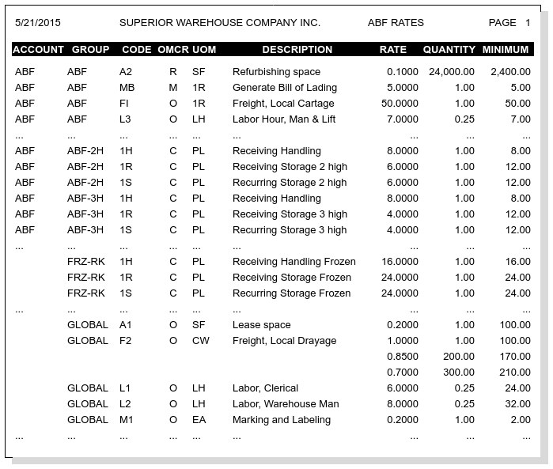
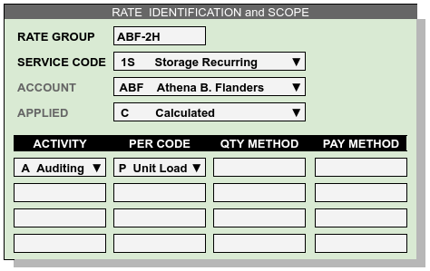

Billing Rates¶
While warehouse services are codified in legal and contractual terms, the warehouse services are priced for a customer through a Rate Quote. In addition to pricing services, WARES rates provide the mechanics of capturing services and billing the customer for them. Entering rates requires considering both the pricing aspect of rates and the application of rates to warehouse activity.
Rate Quote Information¶
A Rate Quote shows the customer services being offered and charges to be billed for those services. Further, it guarantees the logistics company that they will be fairly compensated for services rendered. Knowing the information in a rate quote is crucial before entering rates. The WARES Rate Quote displays a table of the following columns:
| Heading | Description or Explanation |
|---|---|
| Account | Customer Account Identifier |
| Group | Groups organize Rates for management |
| Code | Service Code identifies each service offered by company |
| OMCR | Applied (O)ptional, (M)andatory, (C)alculated, (R)epeating |
| UOM | Billing unit of measure (UOM) code for quantity |
| Description | Invoice/Billing Description of the service |
| Rate | Nominal Rate per unit quantity of service |
| Quantity | Quantity level corresponding to the rate |
| Minimum | Minimum charge applied for this service |
Example of Quote Sections¶
An example partial rate quote is shown following to demonstrate how rates are presented to the customer with WARES. There are four sections to the report, determined by entries in the Account and Group columns.
Sec. 1: Private Rates by Account¶
ACCOUNT = ABF, GROUP = ABF:
Rates grouped by the account identifier (ABF) appear first on the quote. When entering rates in an account group, the account entry, ABF in this case, will be automatically filled and protected. These rates are private to the account, and a service code listed in this group will override a corresponding rate in the general group GLOBAL.
Sec. 2: Private Rates by Group¶
ACCOUNT = ABF, GROUP = user-defined:
Other groups which are restricted by the account identifier provide multiple rate sets for an account, particularly for calculated storage and handling. If an account identifier is entered on the first rate in a group, the account is added and protected on all rates in the group.
Notes on Quotes Example¶
- In the example report, the GLOBAL section shows Codes L1 and L2. The code L3 appears in the private account group ABF, and so this code is suppressed in group GLOBAL for customer ABF.
- Codes 1H, 1R, and 1S are used in both private groups for ABF and the shared group FRZ-RK. Codes used in private groups do not override the same codes in shared groups.
- GLOBAL rate F2 is a tiered rate. The amount charged per unit depends on the quantity, as described in Rate Tiers and Calculations.
Rates Entries¶
In addition to the Rate Quote entries, WARES needs the activity information which triggers a mandatory charge, the conversion of activity quantities into billing units of measure, and the calendar for a repeating rate. The full information for a rate can be broken down into three sections: the scope for applying a rate, the rate calculation and display, and the repeating calendar. This section details these rate parts.
Rate Identifying Scope¶
Rates are identified by the Rate Group and the Service Code. All Rates belong to some group, and groups are either shared across all accounts or are assigned to only one account. This links the rate group directly to the account.
While the Service Codes define the type of service offered, it also determines the manner of applying the service. For example, service codes which are applied Repeating and Calculated cannot be used in group GLOBAL, as GLOBAL contains Optional rates only.
Similarly putting Mandatory or Repeating rates in a group which is not associated to an account is possible, but not recommended. For example, if every account receives the same charge for, say, Bills of Lading, then a shared group without an account could include the Mandatory Bill of Lading service. But: entering a rate with the same service code in an account group would result in two charges, because account-associated rates override GLOBAL rates, but not rates in other shared groups.
The following figure shows identifying entries for rates:
Rate Activity Scope¶
Rates link to warehouse activities through a list of activity codes, where each activity uses a Per code to convert activity quantity units into the rate’s billing units. When a rate is associated with an activity list, the rate is restricted to only that list of activities.
Note
Where a standard per code cannot return a usable quantity, or if the payer of a charge is not the account, then custom program methods may be required. Optional method entries are provided to enable these custom features.
Rules Regarding Rate Scope¶
A rate record identifies how to use a warehouse service code when applying charges to an account. Rules which determine how to apply rates follow:
- Either a rate is restricted to a single account, or it is shared with all accounts, depending on whether the Account entry is filled.
- All rates in a group must have the same account entry. When one rate in a group is associated with an account, all rates in the same group must be filled with the same account as well.
- An optional rate may be restricted to one or more activities, or it may be applicable to all activities.
- All rates which are not optional must be associated with an activity so that the rate can be calculated to produce charges.
- Rates in an Account group override GLOBAL rates for the same service.
Additional Rates Properties¶
- Any one service code can appear only once in a group.
- Optional rates are charged through user entry, and all other rates are charged by system routines.
- Rates in the GLOBAL group are always Optional.
Charge Calculation & Display¶
A service may have a single rate or tiered rates, where multiple rates in tiers vary with quantity. Charges are calculated from quantities and rates according to the following rules.
- Where quantity is left blank, a quantity of 1 is assumed.
- A rate entry is required unless the service is optional.
- Where the quantity is fractional, the rate is for the fraction stated. For example, labor charged at the rate of $8.00 per quarter hour or fraction thereof would have a quantity of .25 and a rate of $8.00.
- The default minimum is the quantity times the rate. Enter a higher amount as desired.
- Where rates are tiered, the guantities must be listed in ascending order.
- Tiered rates are calculated to eliminate rate irrationality.
Basic Charge Calculations¶
The basic formula to calculate a charge from a rate is:
\(Charge = \large\frac{(Amount + Deficit)}{Factor} \normalsize \times Rate\)
where Deficits are calculated based on the Line Minimum:
\(Deficit = \large\frac{(Minimum \times Factor)}{Rate} - Amount \normalsize\)
and \(Deficit \leq 0\) is ignored.
Examples of rates and their calculations for various quantities are shown in the following table:
| SERVICE RATE | Entered | Calculated | Calculated | |||
|---|---|---|---|---|---|---|
| Factor | Quantity | Rate | Minimum | Amount | Deficit | Charge ($) |
| 1.0000 | 0 | 5.0000 | 5.00 | 1.00 | 0 | 5.00 |
| 1.0000 | 0 | .3200 | 1.60 | 4.00 | 1.00 | 1.60 |
| 1.0000 | 0.25 | 8.0000 | 16.00 | .25 | .25 | 16.00 |
| 100.0000 | 0
20000.00
40000.00
|
.4000
.3600
.3200
|
20.00
64.00
128.00
|
4000.00 | 1000.00 | 20.00 |
| 100.0000 | 0
20000.00
40000.00
|
.4000
.3600
.3200
|
20.00
64.00
128.00
|
39000.00 | 1000.00 | 128.00 |
Calculated charges for rates
WARES uses Deficit quantity calculations to augment quantities which do not meet minimums, and to avoid rate irrationalities in tiered rates.
Rate Tiers and Calculations¶
The previous table ends with a tiered rate, and an Amount close to the final bracket quantity. In this event, the charge has to be calculated at the nominal bracket:
The Minimum at the next tier, 128.00, is less than 140.40, and so a deficit of 1000.00 would be applied. then the charge calculation becomes:
Charge Display¶
—
CONSIDERATIONS WHEN ENTERING RATES:
Before any rates are entered, decide what services are being offered and what the default, or retail, rates are for those services. When defining a list of services, do not over-generalize. For example, do not lump all labor services into a single heading, when they can be broken down into specific activities such as RESTACKING, PACKAGING, RELOCATING, and so forth.
Global Rates: Once your business services are identified, enter a global rate for each optional service using the highest rate charged. These rate records should be grouped under one rate name, for example, rate “GLOBAL”. Leave the Account blank on these records, and set Apply to “Optional”. These Rates may be applied by hand on any account.
Override Rates: For negotiated rates on each account, use the account identifier as the Tariff Key and enter the same code as the global service code for that service. Enter the Account identifier in the Account field as well. This causes the negotiated rate to override the global rates for a service.
Mandatory Rates: Where a transaction should always generate a charge, enter a rate for the service with Apply set to “Mandatory”. Then a charge will be added to each specified transaction on the rateed account. Generally Mandatory rates should be assigned to specific accounts. Mandatory rates are applied during Charges Calculation, or when changing a record’s status to billed.
Repeating Rates: When a charge is not based on a transaction, but is applied periodically instead, the rate for the charge should be made repeating. Charge records for repeating rates are created during Charges Calculation, when either “Only” or “Also”” is entered for “Apply Repeating Charges”. Repeating rates are applied based on the rate schedule.
An example of a repeating rate would be a lease charge. This charge might be created on the first day of the month for the current month (current), on the last day of the month for the future month (advance), or on the last day of the month for the current month (arrears). The schedule would be based on “MONTHDAYS”, using the date value of “FIRST” for current billing and “LAST” for either advance or arrears billing.
Calculated Rates: Frequently charges are calculated based on discounts, prorating, and other considerations. These rates are defined in the rates window, but special input parameters and billing calculations may be necessary to calculate the charges. When charges are calculated by special routines, the corresponding rates must be applied as “Calculated”. An example of calculated rates is the storage and handling charges in a warehousing module.
Multiple Rates: Typically optional and mandatory rate codes are assigned by account, while calculated rates are often assigned based on a grouping within an account. A particular calculated rate name may require multiple codes in an account.